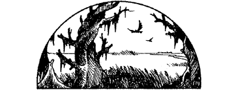

138
Your sense of time slips away as you trek through the seemingly endless expanse of bleak grey trees. Slowly you become aware that you are on an incline, and as your passage becomes steeper, you notice large outcrops of pitted volcanic rock.
‘We’re approaching the Danarg crater,’ says Paido, his quietly spoken words echoing loudly through the eerie forest. Suddenly you recall the words of Lord Rimoah during your period of preparation in Elzian: ‘The Danarg occupies the crater of an ancient and massive volcano. Once it was a lush jungle of fertile vegetation, but now it is a cancerous wound that poisons all who dwell there … ’
By noon you have climbed to the lip of the crater and begun your descent. Gradually the tall, straight trees of the Mordril Forest thin out giving way to twisted trunks and stunted saplings as the land sinks deeper and deeper. Imperceptibly the forest ends and the swamp begins. The ground is softer, and tall, black rushes appear in clumps around misty pools of stagnant water. From tortured husks of trees hang thorny vines, as tough and as cruel as sharpened steel wire. So thickly are they entwined around some trees that they have strangled them, leaving empty coils where the trunks have rotted away. The stench of decay fills your nostrils in the humid yet cold air.
{kind=link}

You wade through ankle-deep slime for nearly an hour before reaching the edge of a huge, murky pool. Whirls and eddies disturb its surface, warning of the creatures that lurk below.
If you have the Magnakai Discipline of Pathsmanship and have reached the rank of Tutelary, turn to 203.
If you wish to skirt around this pool to the north, turn to 36.
If you wish to skirt around it to the south, turn to 300.